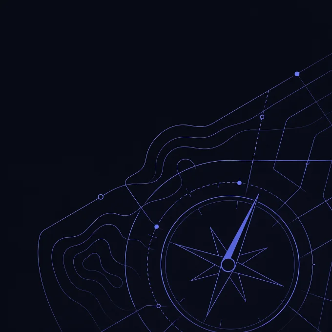
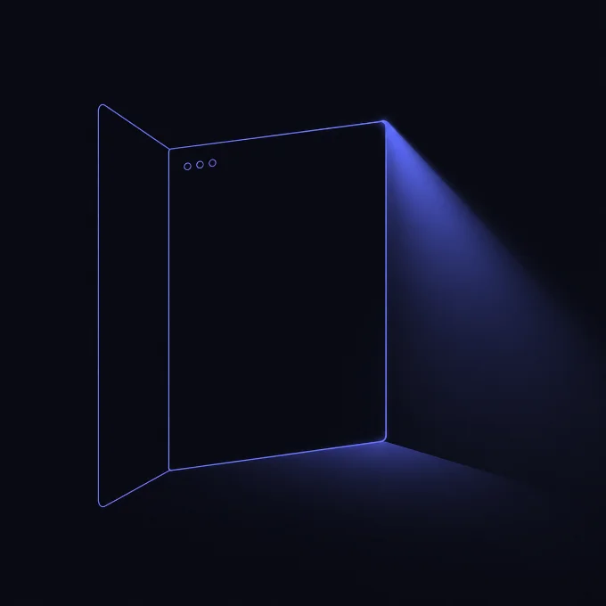
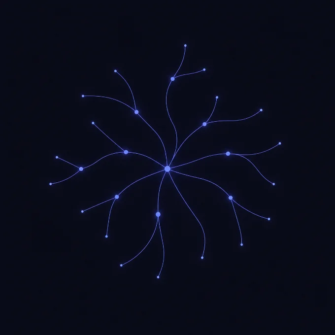

關於作者

林俊全，在倫敦做設計第八年。曾投遞 300 份申請、面試 80 場，走過完整的海外求職路。現為 UX CIRCLES Founder，透過分享會、一對一諮詢，協助台灣設計師準備海外求職與轉職。
給設計師的求職指南
從職涯定位、履歷作品集、面試準備，到拿到 offer 後怎麼談薪水——30 篇文章，陸續在 Substack「裸辭之後」發布，寫給準備海外求職與轉職的設計師。
訂閱，不錯過新文章 →未來會集結成電子書，訂閱的人優先知道
投了很多履歷，大多石沉大海，不知道問題出在履歷、作品集，還是別的地方
作品集改了好幾個月，還是不確定招募者會怎麼看
不知道自己適合新創還是大公司、In-house 還是 Agency
面試常常卡在自我介紹或專案簡報，講不出招募者記得住的故事
好不容易拿到 offer，卻不知道怎麼開口談薪水
想用 AI 加速求職，但不確定怎麼用才真的有幫助
01
看懂自己真正在找什麼
用核心能力而非頭銜評估職涯，新創 vs 大公司該怎麼選，不再靠感覺做決定。
02
做出招募者願意看完的履歷與作品集
包含作品數量不夠、簽了 NDA 沒有畫面可放，這些常見卡點的具體解法。
03
面試不再靠運氣
自我介紹、專案簡報、行為面試題、白板題、Take-home，每個環節都有具體做法。
04
拿到 Offer 後知道怎麼談
談薪水的心理轉換、感謝信怎麼寫、新工作前 90 天怎麼站穩腳步。
完整目錄
已發布的可以直接閱讀，其餘會陸續更新。

第一章｜先搞清楚你要找什麼
像羅盤一樣，先看清方向，再決定怎麼走
1. 找不到理想的設計工作？問題可能不在能力，而在你的「期待」
已發布
2. 新創 vs 大公司，怎麼選？
7/31
3. 破除頭銜迷思：用「核心能力」而非「名片上的 Title」來評估你的職涯
8/4
4. 用「第二曲線」思考求職以外的下一步
8/11
5. In-house 還是 Agency？做產品還是做網頁？
8/14
6. 定位你自己：從「什麼都能做的設計師」到「複雜系統 Fintech 設計師」
8/18

第二章｜讓人看見你
打開一扇窗，讓招募者看見你真正的樣子
7. 從定位到履歷：怎麼決定要留下什麼，拿掉什麼
8/21
8. 設計師履歷這樣寫，HR 才會繼續看下去
8/25
9. Cover Letter 不是履歷的摘要，是定位的證詞
9/1
10. 作品數量到底要多少才夠？資歷淺、轉職者的三種解法
敬請期待
11. 作品集：3 個案例講清楚，比 10 個 project 堆疊更有效
敬請期待
12. 作品集用網頁呈現：工具怎麼選，怎麼去掉 AI 味
敬請期待
13. 作品集首頁與 Hero Section：3 秒內留住招募者
敬請期待
14. NDA 底下的作品集：沒有畫面可以放，還能怎麼寫故事
敬請期待
15. LinkedIn：被動求職者的日常經營
敬請期待
16. 求職管道實務：除了 Referral、Coffee Chat，還有哪些曝光機會？
敬請期待
第三章｜走進面試現場
走進會議室之前，先想清楚要說的故事
17. 面試準備：從研究公司到問對問題
敬請期待
18. 自我介紹：5 分鐘內定調一場面試
敬請期待
19. 專案簡報：怎麼講一個招募者記得住的故事
敬請期待
20. 行為面試題：除了 STAR，還有兩個實用敘事框架
敬請期待
21. 白板題：設計師最怕的現場設計怎麼破
敬請期待
22. 設計挑戰（Take-home）：值得做與不值得做的界線
敬請期待
23. 反問面試官：問對問題也是一種展現
敬請期待
24. 面試復盤：怎麼讓每一場都比上一場更穩
敬請期待
第四章｜拿到 Offer 之後
談判不是對抗，是為自己爭取應得的位置
25. 談薪：從不敢開口到用英鎊數字談判
敬請期待
26. 感謝信：小動作，大差別
敬請期待
27. 第一天：新工作前 90 天怎麼活下來
敬請期待

番外篇｜AI 時代怎麼玩
工具會變，你的判斷力才是核心
28. 只會用 ChatGPT 算不上 AI 設計師？
8/7
29. AI 工具怎麼用在求職流程（履歷／作品集／模擬面試）
敬請期待
30. AI 會不會取代設計師？求職者該怎麼想這件事
敬請期待
✓ 適合你，如果你是
準備海外求職或轉職的台灣設計師（UX / UI / Product Design）
正在重新定位自己、不確定下一步方向的設計師
準備面試，卻常常卡在說故事這一關的人
想系統性地走過整個求職流程，而不是東拼西湊零散資訊的人
✕ 可能不適合，如果你
想要一套保證上岸的公式或模板
已經有非常成熟的求職系統，不需要重新檢視
完全不考慮海外市場，只需要純台灣本地的求職資訊
關於作者
林俊全，在倫敦做設計第八年。曾投遞 300 份申請、面試 80 場，走過完整的海外求職路。現為 UX CIRCLES Founder，透過分享會、一對一諮詢，協助台灣設計師準備海外求職與轉職。
這些文章多久更新一次？
目前規劃每週更新，實際頻率會依工作狀況調整。訂閱 Substack 會在新文章發布時直接收到通知，不用自己回來查。
之後真的會集結成電子書出售嗎？
是目前的規劃。等內容累積到一定量，會整理成電子書，訂閱的人會最先知道上架消息，也會有訂閱者專屬優惠。
我不是想去海外工作，只是想在台灣轉職，適合看嗎？
大部分策略（職涯定位、履歷、作品集、面試）不管在哪裡求職都通用，只有少數幾篇特別針對海外或英國市場，可以依自己需求挑著讀。
免費看得到全部內容嗎？
目前所有文章都會先在 Substack 免費公開連載。之後集結成電子書時可能會加入額外整理或模板，但連載文章本身會維持免費。
訂閱「裸辭之後」
新文章發布時直接通知你，未來電子書上架也會優先讓訂閱的人知道。
訂閱追蹤 →